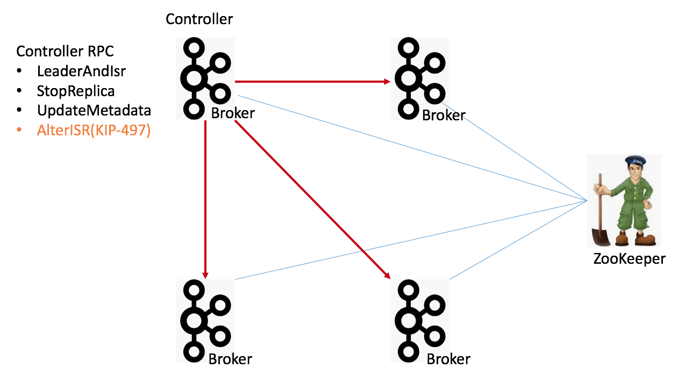
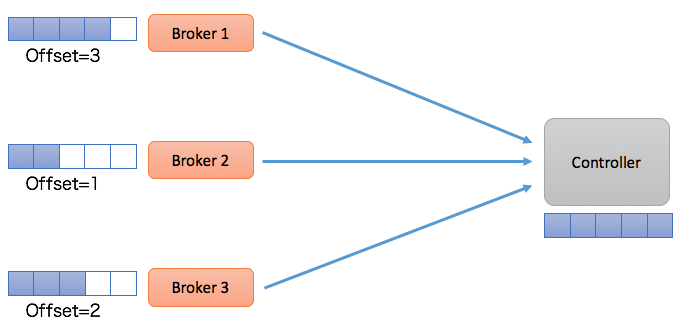

- 00 导读 构建Kafka工程和源码阅读环境、Scala语言热身.md
- 00 开篇词 阅读源码，逐渐成了职业进阶道路上的“必选项”.md
- 00 重磅加餐 带你快速入门Scala语言.md
- 01 日志段：保存消息文件的对象是怎么实现的？.md
- 02 日志（上）：日志究竟是如何加载日志段的？.md
- 03 日志（下）：彻底搞懂Log对象的常见操作.md
- 04 索引（上）：改进的二分查找算法在Kafka索引的应用.md
- 05 索引（下）：位移索引和时间戳索引的区别是什么？.md
- 06 请求通道：如何实现Kafka请求队列？.md
- 07 SocketServer（上）：Kafka到底是怎么应用NIO实现网络通信的？.md
- 08 SocketServer（中）：请求还要区分优先级？.md
- 09 SocketServer（下）：请求处理全流程源码分析.md
- 10 KafkaApis：Kafka最重要的源码入口，没有之一.md
- 11 Controller元数据：Controller都保存有哪些东西？有几种状态？.md
- 12 ControllerChannelManager：Controller如何管理请求发送？.md
- 13 ControllerEventManager：变身单线程后的Controller如何处理事件？.md
- 14 Controller选举是怎么实现的？.md
- 15 如何理解Controller在Kafka集群中的作用？.md
- 16 TopicDeletionManager： Topic是怎么被删除的？.md
- 17 ReplicaStateMachine：揭秘副本状态机实现原理.md
- 18 PartitionStateMachine：分区状态转换如何实现？.md
- 19 TimingWheel：探究Kafka定时器背后的高效时间轮算法.md
- 20 DelayedOperation：Broker是怎么延时处理请求的？.md
- 21 AbstractFetcherThread：拉取消息分几步？.md
- 22 ReplicaFetcherThread：Follower如何拉取Leader消息？.md
- 23 ReplicaManager（上）：必须要掌握的副本管理类定义和核心字段.md
- 24 ReplicaManager（中）：副本管理器是如何读写副本的？.md
- 25 ReplicaManager（下）：副本管理器是如何管理副本的？.md
- 26 MetadataCache：Broker是怎么异步更新元数据缓存的？.md
- 27 消费者组元数据（上）：消费者组都有哪些元数据？.md
- 28 消费者组元数据（下）：Kafka如何管理这些元数据？.md
- 29 GroupMetadataManager：组元数据管理器是个什么东西？.md
- 30 GroupMetadataManager：位移主题保存的只是位移吗？.md
- 31 GroupMetadataManager：查询位移时，不用读取位移主题？.md
- 32 GroupCoordinator：在Rebalance中，Coordinator如何处理成员入组？.md
- 33 GroupCoordinator：在Rebalance中，如何进行组同步？.md
- 特别放送（一）经典的Kafka学习资料有哪些？.md
- 特别放送（三）我是怎么度过日常一天的？.md
- 特别放送（二）一篇文章带你了解参与开源社区的全部流程.md
- 特别放送（五） Kafka 社区的重磅功能：移除 ZooKeeper 依赖.md
- 特别放送（四）20道经典的Kafka面试题详解.md
- 结束语 源码学习，我们才刚上路呢.md
特别放送（五） Kafka 社区的重磅功能：移除 ZooKeeper 依赖
你好，我是胡夕。今天，我们来聊聊Kafka社区的一个重磅功能：移除ZooKeeper依赖。
Kafka从诞生开始，就跟ZooKeeper紧紧地绑在了一起。可以这么说，没有ZooKeeper，就没有Kafka今天的成功。
但是，随着Kafka的不断完善和演进，社区逐渐发现，在ZooKeeper和Kafka结合使用的过程中，一些问题慢慢地显现了出来。比如说，ZooKeeper并不适合于频繁的写操作，但Kafka 0.8时代的消费者就是利用ZooKeeper来保存其位移信息的。因此，移除ZooKeeper并使用Kafka内部主题的方式保存位移，就从根本上规避了ZooKeeper的这个弊病。
摆脱ZooKeeper依赖的另一个好处在于，这能让Kafka变成一个独立的框架。这样，以后在使用Kafka时，就不需要再额外维护一套ZooKeeper集群了。显然，安装、运维和调优一套分布式集群的代价是很高的，能够去除这样的依赖当然是一件好事。
讲到这里，我猜你一定很想知道，社区究竟打算怎么移除ZooKeeper呢？别急，我带你一步步来看下社区的计划。
Clients演进
首先，我们来看两张图。这两张图总结了0.8.x版本和0.11.x版本（是否真的是从0.11版本开始的变化并不重要）及后续版本的功能变迁。

在Kafka 0.8时代，Kafka有3个Clients端，分别是：
- Producer，负责向Kafka写消息；
- Consumer，负责从Kafka读消息；
- Admin Tool，执行各种运维任务，比如创建或删除主题等。
其中，Consumer的位移数据保存在ZooKeeper上，因此，Consumer端的位移提交和位移获取操作都需要访问ZooKeeper。另外，Admin Tool执行运维操作也要访问ZooKeeper，比如在对应的ZooKeeper znode上创建一个临时节点，然后由预定义的Watch触发相应的处理逻辑。
后来，随着Kafka的演进，社区引入了位移主题（__consumer_offsets），同时定义了OffsetFetch和OffsetCommit等新的RPC协议。这样一来，Consumer的位移提交和位移获取操作与位移主题直接交互，从而避免了对ZooKeeper的访问。
除此之外，社区还引入了新的运维工具AdminClient以及相应的CreateTopics、DeleteTopics、AlterConfigs等RPC协议，替换了原先的Admin Tool。于是，创建和删除主题这样的运维操作也完全移动到Kafka这一端来做，就像上面的第二张图展示的那样。
到这里，Kafka的3个Clients端基本上都不需要和ZooKeeper交互了。应该说，移除ZooKeeper的工作完成了一大半，不过，依然还有一部分工作要在ZooKeeper的帮助下完成，那就是Consumer的Rebalance操作。
在0.8时代，Consumer Group的管理是交由ZooKeeper完成的，包括组成员的管理和订阅分区的分配。这个设计在新版的Consumer中也得到了修正——全部的Group管理操作交由Kafka Broker端新引入的Coordinator组件来完成。要完成这些工作，Broker端新增了很多RPC协议，比如JoinGroup、SyncGroup、Heartbeat、LeaveGroup等。
此时，Kafka的Java Clients端除了AdminClient还要依赖ZooKeeper之外，所有其他的组件全部摆脱了对ZooKeeper的依赖。
之后，社区引入了Kafka安全层，实现了对用户的认证和授权。这个额外的安全层也是不需要访问ZooKeeper的，因此，之前依赖ZooKeeper的Clients端是无法“享用”这个安全层的。一旦启用，新版Clients都需要首先接入这一层，而且要在通过审核之后才能访问到Broker，如下图所示：

这么做的好处就是统一了Clients端访问Broker端的模式，即通过定义一套跨语言RPC协议栈，实现Clients端与Broker端的服务连接。这样一来，不同的语言开发者只需要按照这套规范开发自己语言的RPC协议，就能实现与Kafka Broker端的交互了。如果后面需要实现更多的功能，社区只需要定义新的RPC协议就行了。同时，新引入的安全层负责对这套RPC协议进行安全校验，统一了访问模式。另外，这些协议都是版本化的（versioned），能够独立地进行演进，同时也兼顾了兼容性方面的考量。
Broker间交互
说完了Clients端，我们说下Broker端的现状。目前，应该说Kafka Broker端对ZooKeeper是重度依赖的，主要表现在以下几个方面：
- Broker注册管理；
- ACL安全层配置管理；
- 动态参数管理；
- 副本ISR管理；
- Controller选举。
我们拿一张图来说明。

图中有4个Broker节点和1个ZooKeeper，左上角的Broker充当Controller的角色。当前，所有的Broker启动后都必须维持与ZooKeeper的会话。Kafka依赖于这个会话实现Broker端的注册。而且，Kafka集群中的所有配置信息、副本信息、主题信息也都保存在ZooKeeper上。最后，Controller与集群中的每个Broker都维持了一个TCP长连接，用于向这些Broker发送RPC请求。当前的Controller RPC类型主要有3大类：
- LeaderAndIsr：主要用于向集群广播主题分区Leader和ISR的变更情况，比如对应的Broker应该是特定分区的Leader还是Follower；
- StopReplica：向集群广播执行停止副本的命令；
- UpdateMetadata：向集群广播执行变更元数据信息的命令。
图中还新增了一个AlterISR RPC，这是KIP-497要实现的新RPC协议。现阶段，Kafka各个主题的ISR信息全部保存在ZooKeeper中。如果后续要舍弃ZooKeeper，就必须将这些信息从ZooKeeper中移出来，放在Controller端来做。同时，还要在程序层面支持对ISR的管理。因此，社区计划在KIP-497上增加AlterISR协议。对了，还要提一句，当前Controller的选举也是依靠ZooKeeper完成的。
所以，后面Broker端的演进可能和Clients端的路线差不多：首先是把Broker与ZooKeeper的交互全部干掉，只让Controller与ZooKeeper进行交互，而其他所有Broker都只与Controller交互，如下图所示：

看上去，这种演进路线社区已经走得轻车熟路了，但实际上还有一些遗留问题，需要解决。
Broker Liveness
首先就是Broker的liveness问题，也就是，Kafka如何判断一个Broker到底是否存活？在目前的设计中，Broker的生存性监测完全依赖于与ZooKeeper之间的会话。一旦会话超时或断开，Controller自动触发ZooKeeper端的Watch来移除该Broker，并对它上面的分区做善后处理。如果移除了ZooKeeper，Kafka应该采用什么机制来判断Broker的生存性是一个问题。
Network Partition
**如何防范网络分区（Network Partition）**也是一个需要讨论的话题。当前可能出现的Network Partition有4种：
- 单个Broker完全与集群隔离；
- Broker间无法通讯；
- Broker与ZooKeeper无法通讯；
- Broker与Controller无法通讯。
下面4张图分别展示了这4种情况：
-

我们分别来讨论下。
情况一：单Broker与集群的其他Broker隔离，这其实并不算太严重的问题。当前的设计已经能够保证很好地应对这种情况了。一旦Broker被隔离，Controller会把它从集群中摘除，虽然可用性降低了，但是整个集群的一致性依然能够得到保证。
情况二：Broker间无法通讯，可能的后果是消息的备份机制无法执行，Kafka要收缩ISR，依然是可用性上的降低，但是一致性状态并没有被破坏。
情况三：Broker无法与ZooKeeper通讯。Broker能正常运转，它只是无法与ZooKeeper进行通讯。这个时候，我们说该Broker处于僵尸状态，即所谓的Zoobie状态。在社区的Jira中，因Zoobie状态引入的一致性Bug一直没有断过，社区这几年也一直在修正这方面的问题，主要对抗的机制就是fencing，比如Leader Epoch。
情况四：Broker无法与Controller通讯。在这种情况下，所有的元数据更新通道被堵死，即使这个Broker依然是healthy的，它保存的元数据信息也可能是非常过期的。这样的话，连接这个Broker的Clients端可能会看到各种非常古怪的问题。我之前回答过类似的问题，你可以点击链接看一下。
这种情况比较复杂，我就再多唠叨几句。实际上，针对这种情况，目前社区也没有太好的解决办法，主要的原因是，Broker的liveness完全是交由ZooKeeper来做的。一旦Broker与ZooKeeper之间的交互没有问题，其他原因导致的liveness问题就无法彻底规避。
第四类Network Partition引入了一个经典的场景：元数据不一致。目前，每个Broker都缓存了一份集群的元数据信息，这份数据是异步更新的。当第四类Partition发生的时候，Broker端缓存的元数据信息必然与Controller的不同步，这就会造成各种各样的问题。
下面，我简单介绍一下元数据更新的过程。主要流程就是，Controller启动时会同步从ZooKeeper上拉取集群全量的元数据信息，之后再以异步的方式同步给其他Broker。其他Broker与Controller之间的同步往往有一个时间差，也就是说，Clients访问的元数据可能并不是最新的。我个人认为，现在社区很多flaky test failure都是这个原因导致的。
事实上，在实际使用过程中，有很多场景是Broker端的元数据与Controller端永远不同步。通常情况下，如果我们不重启Broker的话，那么这个Broker上的元数据将永远“错误”下去。
好在社区还给出了一个最后的“大招”： 登录到ZooKeeper SHELL，手动执行rmr /controller，强迫Controller重选举，然后重新加载元数据，并给所有Broker重刷一份。不过，我怀疑，在实际生产环境中是否有人真的要这么干，毕竟这样做的代价不小，而且最关键的是，这么做依然可能存在两个问题：
- 我们如何确保Controller和Broker的数据是一致的？
- 加载元数据的过程通常很慢。
这里我详细说说第二点，即加载元数据的性能问题。
总体来说，加载元数据是一个O(N)时间复杂度的过程，这里的N就是你集群中总的分区数。考虑到Controller从ZooKeeper加载之后还要推给其他的Broker，那么做这件事的总的时间复杂度就是O(N * M)，其中M是集群中Broker的数量。可以想见，当M和N都很大时，在集群中广播元数据不是一个很快的过程。
考虑到刚刚我们提到的所有问题，当Kafka抛弃了ZooKeeper之后，社区如何解决它们呢？总体的思路就是Metadata as an Event Log + Controller quorum。我们先说metadata as an event log。
Metadata as an Event Log
如果你读过Jay Kreps的《I ❤️ Logs》，你应该有感触，整个Kafka的架构其实都是构建在Log上的。每个Topic的分区本质上就是一个Commit Log，但元数据信息的保存却不是Log形式。在现有的架构设计中，你基本上可以认为元数据的数据结构是KV形式的。这一次，社区采用了与消息相同的数据保存方式，也就是将元数据作为Log的方式保存起来，如下表所示：

利用Kafka自身的Log机制保存元数据的做法，有以下4个优点：
- 高可用性：每次元数据的变更都被当作是一条消息保存在Log中，而这个Log可以被视为一个普通的Kafka主题被备份到多台Broker上。
- 顺序性：Log的一个好处在于它有清晰的前后顺序关系，即每个事件发生的时间是可以排序的，配合以恰当的处理逻辑，我们就能保证，对元数据变更的处理是按照变更发生的时间进行顺序处理的，不出现乱序的情形。
- 增量同步性：利用Log机制之后，Broker间同步元数据能够采用同步增量数据（delta）的方式，无需每次都同步全量数据。目前，Kafka Broker间同步元数据都是全量状态同步的。前面说过了，当集群分区数很大时，这个开销是很可观的。如果我们能够只同步增量状态，势必能极大地降低同步成本。
- 可监控性：Log提供了丰富的监控指标。我们根据这些指标能够轻易地获取到元数据同步的进度。
采用Log机制后，其他Broker像是一个普通的Consumer，从Controller拉取元数据变更消息或事件。由于每个Broker都是一个Consumer，所以它们会维护自己的消费位移，如下图所示：

在这种设计下，Controller所在的Broker必须要承担起所有元数据Topic的管理工作，包括创建Topic、管理Topic分区的Leader以及为每个元数据变更创建相应的事件等。既然社区选择和__consumer_offsets类似的处理方式，一个很自然的问题就是，这个元数据Topic的管理是否能够复用Kafka现有的副本机制？答案是：不可行。理由是现有的副本机制依赖于Controller，因此，Kafka没法依靠现有的副本机制来实现Controller。按照我们的俗语来说，这有点“鸡生蛋、蛋生鸡“的问题，属于典型的循环依赖。
为了实现这个，Kafka需要一套Leader选举协议，而这套协议或算法是不依赖于Controller的，即它是一个自管理的集群quorum（抱歉，在分布式领域内，特别是分布式共识算法领域中，针对quorum的恰当翻译我目前还未找到，因此直接使用quorum原词了）。最终，社区决定采用Raft来实现这组quorum。这就是上面我们提到的第二个解决思路：Controller quorum。
Controller Quorum
与借助Controller帮忙选择Leader不同，Raft是让自己的节点自行选择Leader，并最终令所有节点达成共识。对选择Controller而言，这是一个很好的特性。其实，Kafka现有的备份机制已经跟Raft很接近了。你可以看一下下面这张表格，简单对它们进行下对比。
一眼扫过去，你会发现，其实Kafka的备份机制和Raft很类似，比如，Kafka中的offset其实就是Raft中的index，epoch对应于term。当然，Raft中采用半数机制来确保消息被提交以及Leader选举，而Kafka设计了ISR机制来实现这两点。总体来说，社区认为只需要对备份机制做一些小改动，应该就可以很容易地切换到Raft-based算法了。
下面这张图展示的Controller quorum可能更加直观：

整个Controller quorum类似于一个小的集群。和ZooKeeper类似，这个quorum通常是3台或5台机器，不需要让Kafka中的每个Broker都自动成为这个quorum中的一个节点。
该quorum里面有一个Leader负责处理Clients端发来的读写请求，这个Leader就是Kafka中的active Controller。根据ZooKeeper的Zab协议，Leader处理所有的写请求，而Follower是可以处理读请求的。当写请求发送给Follower后，Follower会将该请求转发给Leader处理。
不过，我猜Kafka应该不会这样实现，它应该只会让Leader（即active Controller）处理所有的读写请求，而Clients端（也就是其他Broker）压根就不会发送读写请求给Follower。在这一点上，这种设计和现有的Kafka请求处理机制是一致的。
现在还需要解决一个问题，即Leader是怎么被选出来的？既然是Raft-based，那么采用的也是Raft算法中的Leader选举策略。让Raft选出的Leader称为active Controller。网上有很多关于Raft选主的文章，我就不再赘述了，有兴趣的可以读一读Raft的论文：In Search of an Understandable Consensus Algorithm(Extended Version)。
这套Raft quorum有2个好处。
第一个好处就是，它天然提供了低延时的Failover，因此，Leader的切换会非常得迅速和及时，因为理论上不再有元数据加载的过程了，所有的元数据现在都同步保存Follower节点的内存中，它已经有其他Broker需要拉取的所有元数据信息了！
更酷的是，它避免了现在机制中一旦Controller切换，就要全量拉取元数据的低效行为，Broker不需要重新拉取之前已经“消费”的元数据变更消息，只需要从新Leader继续“消费”即可。
另一个好处在于，采用了这套机制后，Kafka可以做元数据的缓存了（metadata caching），即Broker能够把元数据保存在磁盘上。同时，就像刚才说的，Broker只需读取它关心的那部分数据即可。另外，和现在的snapshot机制类似，如果一个Broker保存的元数据落后Controller太多，或者是一个全新的Broker，Kafka甚至可以像Raft那样直接发送一个snapshot文件，快速令其追上进度。当然，在大多数情况下，Broker只需要拉取delta增量数据就行了。
总结
基于以上的这些解决方案，社区打算分三步来完成对ZooKeeper的依赖：
- 第一步：移除Clients端对ZooKeeper的依赖。这一步基本上已经完成了，除了目前AdminClient还有少量的API依赖ZooKeeper之外，其他Clients端应该说都不需要访问ZooKeeper了。
- 第二步：移除Broker端的ZooKeeper依赖。这主要包括移除Broker端需要访问ZooKeeper的代码，以及增加新的Broker端API，比如前面说的AlterISR等，最后是将对ZooKeeper的访问全部集中在controller端。
- 最后一步：实现controller quorum，也就是实现Raft-based的quorum负责controller的选举。
应该说，移除ZooKeeper的功能算是近几年社区最为重磅的提案了。这个提案涉及组件之广、历时之长、复杂程度之高在社区中非常罕见。一旦后续完整地实现了这个功能，Apache Kafka将极大地提升自己的可维护性，以一个更加“清爽”的形象出现在我们面前。至于最后的效果如何，就让我们拭目以待吧。
课后讨论
我在前面提到，社区打算自己写一套Raft-based的算法来实现Controller的选举，你觉得，为什么社区不直接采用第三方成熟的Raft库来实现呢？
欢迎你在留言区畅所欲言，跟我交流讨论，也欢迎你把今天的内容分享给你的朋友。
© 2019 - 2023 Liangliang Lee. Powered by Vert.x and hexo-theme-book.